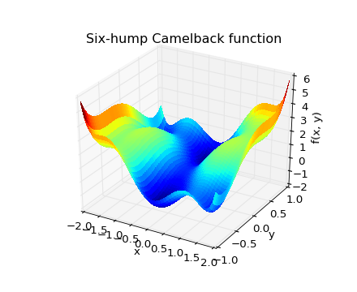
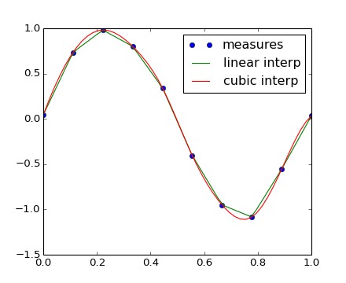
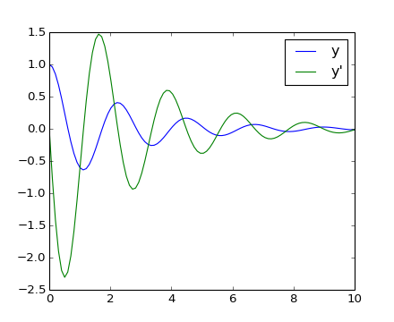

| Autores: | Adrien Chauve, Andre Espaze, Emmanuelle Gouillart, Gaël Varoquaux, Ralf Gommers |
|---|
Scipy
El paquete scipy contiene varias cajas de herramientas dedicadas a problemas comunes problemas en computación científica. Sus diferentes submódulos corresponden a diferentes aplicaciones, tales como interpolación, integración, optimización, procesamiento de imágenes, estadística, funciones especiales, etc.
scipy se puede comparar con otras bibliotecas estándar de computación científica, como GSL (GNU Scientific Library para C y C++), o cajas de herramientas de Matlab. scipy es el paquete núcleo para rutinas científicas en Python; operando de manera eficiente los arreglos numpy, por tanto numpy y scipy trabajan mano a mano.
Antes de implementar una rutina, hay que comprobar si no está implementado en Scipy. Como programadores no profesionales, los científicos a menudo tienden a reinventar la rueda, lo que conduce a errores en el código, código no optimizado, código difícil de compartir e imposible de mantener. Por el contrario, las rutinas que contiene Scipy están optimizadas y probadas, por lo tanto se debe utilizar siempre que sea posible.
Contenido
Advertencia
Este tutorial está lejos de ser una introducción a métodos numéricos. Enumerar los diferentes submódulos y funciones en scipy seria muy aburrido, en cambio nos concentramos en algunos ejemplos para dar una idea general de cómo utilizar scipy para computación científica.
scipy contiene sub-módulos para tareas específicas:
| scipy.cluster | Vector quantization / Kmeans |
| scipy.constants | Constantes físicas y matemáticas |
| scipy.fftpack | Transformadas de Fourier |
| scipy.integrate | Rutinas para integración |
| scipy.interpolate | Interpolación |
| scipy.io | Entrada y salida |
| scipy.linalg | Rutinas para algebra lineal |
| scipy.ndimage | n-dimensional image package |
| scipy.odr | Orthogonal distance regression |
| scipy.optimize | Optimización |
| scipy.signal | Procesamiento de señales |
| scipy.sparse | Matrices dispersas |
| scipy.spatial | estructuras de datos espaciales y algoritmos |
| scipy.special | Funciones matemáticas especiales |
| scipy.stats | Estadística |
Todos ellos dependen de numpy, en su mayoría son independientes el uno del otro. La forma estándar de importar Numpy y módulos Scipy es
>>> import numpy as np
>>> from scipy import stats # lo mismo para otros submódulos
El espacio de nombres principal scipy que contiene la mayoría de las funciones son en realidad funciones numpy (pruebe scipy.cos is np.cos). Están expuestos por razones solamente históricas, por lo general no hay ninguna razón para utilizar import scipy en su código.
Cargar y guardar archivos de matlab
>>> from scipy import io as spio
>>> a = np.ones((3, 3))
>>> spio.savemat('file.mat', {'a': a}) # savemat espera un diccionario
>>> data = spio.loadmat('file.mat', struct_as_record=True)
>>> data['a']
array([[ 1., 1., 1.],
[ 1., 1., 1.],
[ 1., 1., 1.]])
Lectura de imágenes
>>> from scipy import misc
>>> misc.imread('fname.png')
>>> # Matplotlib tiene una función similar
>>> import matplotlib.pyplot as plt
>>> plt.imread('fname.png')
Ver también:
Las funciones especiales son funciones trascendentales. La cadena de documentación del módulo scipy.special está bien escrita, así que no vamos a enumerar todas las funciones aquí. Los frecuentemente utilizadas son:
El módulo scipy.linalg ofrece operaciones estándar para álgebra lineal, basándose en una aplicación eficiente subyacente (BLAS, LAPACK).
El función scipy.linalg.det() calcula el determinante de una matriz cuadrada
>>> from scipy import linalg
>>> arr = np.array([[1, 2],
... [3, 4]])
>>> linalg.det(arr)
-2.0
>>> arr = np.array([[3, 2],
... [6, 4]])
>>> linalg.det(arr)
0.0
>>> linalg.det(np.ones((3, 4)))
Traceback (most recent call last):
...
ValueError: expected square matrix
La función scipy.linalg.inv() calcula la inversa de una matriz cuadrada
>>> arr = np.array([[1, 2],
... [3, 4]])
>>> iarr = linalg.inv(arr)
>>> iarr
array([[-2. , 1. ],
[ 1.5, -0.5]])
>>> np.allclose(np.dot(arr, iarr), np.eye(2))
True
Finalmente calcular la inversa de una matriz singular (su determinante es cero) generará un error LinAlgError
>>> arr = np.array([[3, 2],
... [6, 4]])
>>> linalg.inv(arr)
Traceback (most recent call last):
...
LinAlgError: singular matrix
Operaciones más avanzadas están disponibles, por ejemplo descomposición en valores singulares (SVD)
>>> arr = np.arange(9).reshape((3, 3)) + np.diag([1, 0, 1])
>>> uarr, spec, vharr = linalg.svd(arr)
Los valores propios son
>>> spec
array([ 14.88982544, 0.45294236, 0.29654967])
La matriz original puede ser obtenida mediante multiplicación matricial de los resultados de svd con np.dot
>>> sarr = np.diag(spec)
>>> svd_mat = uarr.dot(sarr).dot(vharr)
>>> np.allclose(svd_mat, arr)
True
SVD se utiliza comúnmente en estadística y procesamiento de señales. Otros métodos de descomposiciones estándar están disponibles (QR, LU, Cholesky, Schur), támbien solucionadores de sistemas lineales, están disponibles en scipy.linalg.
El módulo scipy.fftpack permite calcular la transformada rápida de Fourier. A modo de ejemplo, una señal de entrada (con ruido) puede verse
>>> time_step = 0.02
>>> period = 5.
>>> time_vec = np.arange(0, 20, time_step)
>>> sig = np.sin(2 * np.pi / period * time_vec) + \
... 0.5 * np.random.randn(time_vec.size)
El observador no conoce la frecuencia de la señal, sólo el paso de tiempo de muestreo de la señal sig. La señal se supone que procede de una función real para la cual la transformada de Fourier será simétrica. La función scipy.fftpack.fftfreq() genera las frecuencias de muestreo y scipy.fftpack.fft() calcula la transformada rápida de Fourier
>>> from scipy import fftpack
>>> sample_freq = fftpack.fftfreq(sig.size, d=time_step)
>>> sig_fft = fftpack.fft(sig)
Debido a que la potencia resultante es simétrica, sólo la parte positiva del espectro es utilizada para encontrar la frecuencia
>>> pidxs = np.where(sample_freq > 0)
>>> freqs = sample_freq[pidxs]
>>> power = np.abs(sig_fft)[pidxs]
[source code, hires.png, pdf]
La frecuencia de la señal se puede encontrar
>>> freq = freqs[power.argmax()]
>>> np.allclose(freq, 1./period) # check that correct freq is found
True
Ahora, el ruido de alta frecuencia será eliminado de la señal transformada de Fourier
>>> sig_fft[np.abs(sample_freq) > freq] = 0
La señal filtrada resultante puede ser calculado con la función scipy.fftpack.ifft()
>>> main_sig = fftpack.ifft(sig_fft)
El resultado se puede ver con
>>> import pylab as plt
>>> plt.figure()
>>> plt.plot(time_vec, sig)
>>> plt.plot(time_vec, main_sig, linewidth=3)
>>> plt.xlabel('Time [s]')
>>> plt.ylabel('Amplitude')
[source code, hires.png, pdf]
Numpy también tiene una implementación de FFT (numpy.fft). Sin embargo, en general es preferible usar scipy.fftpack, ya que utiliza implementaciones subyacentes más eficientes.
Ejemplo práctico: Encontrar periodicidad cruda
[source code, hires.png, pdf]
[source code, hires.png, pdf]
Ejercicio: Imagen de alunizaje con ruido

Optimización es el problema de encontrar una solución numérica a un minimización o igualdad.
El módulo scipy.optimize proporciona algoritmos útiles para la minimización de funciones (escalares o multidimensionales), ajuste de curvas y búsqueda de raices.
>>> from scipy import optimize
Encontrar los mínimos de una función escalar
Vamos a definir la siguiente función:
>>> def f(x):
... return x**2 + 10*np.sin(x)
y la graficamos:
>>> x = np.arange(-10, 10, 0.1)
>>> plt.plot(x, f(x))
>>> plt.show()
[source code, hires.png, pdf]
Esta función tiene un mínimo global en torno a -1.3 y un mínimo local en torno a 3.8.
La forma general y eficiente para encontrar el mínimo de esta función es llevar a cabo un descenso de gradiente partiendo de un punto inicial dado. El algoritmo BFGS es una buena manera de hacer esto
>>> optimize.fmin_bfgs(f, 0)
Optimization terminated successfully.
Current function value: -7.945823
Iterations: 5
Function evaluations: 24
Gradient evaluations: 8
array([-1.30644003])
Un posible problema con este enfoque es, si la función tiene mínimos locales el algoritmo puede encontrar estos mínimos locales en lugar de los mínimos globales de pendiendo del punto inicial:
>>> optimize.fmin_bfgs(f, 3, disp=0)
array([ 3.83746663])
Si no conocemos el intérvalo del mínimo global para elegir el punto inicial, tenemos que recurrir a una más costoso optimización global. Para encontrar el mínimo global, el algoritmo más simple es el algoritmo de fuerza bruta, en la que el la función se evalúa en cada punto de una cuadrícula:
>>> grid = (-10, 10, 0.1)
>>> xmin_global = optimize.brute(f, (grid,))
>>> xmin_global
array([-1.30641113])
Para tamaños de cuadrícula más grandes, scipy.optimize.brute() se vuelve muy lento. scipy.optimize.anneal() ofrece una alternativa, utilizando recocido simulado. Existen algoritmos más eficientes para diferentes tipos de problemas de optimización global, pero están fuera del alcance de scipy. Algunos paquetes útiles para optimización global son OpenOpt, IPOPT, PyGMO y PyEvolve.
Para encontrar el mínimo local, vamos a restringir la variable en el intervalo (0, 10) usando scipy.optimize.fminbound():
>>> xmin_local = optimize.fminbound(f, 0, 10)
>>> xmin_local
3.8374671...
Nota
Encontrar los mínimos de una función se discute con más detalles en el capítulo avanzado: Mathematical optimization: finding minima of functions.
Encontrar las raíces de una función escalar
Para encontrar una raíz, o el punto donde f(x) = 0, de la función f de arriba podemos utilizar por ejemplo scipy.optimize.fsolve():
>>> root = optimize.fsolve(f, 1) # our initial guess is 1
>>> root
array([ 0.])
Tenga en cuenta que sólo una raíz puede ser encontrada. Una inspeción a la gráfica de f revela que hay una segunda raíz alrededor de -2.5. Encontramos el valor exacto de la misma mediante un ajuste a la estimación inicial:
>>> root2 = optimize.fsolve(f, -2.5)
>>> root2
array([-2.47948183])
Ajuste de curvas
Supongamos que tenemos datos de una muestra de f con un poco de ruido:
>>> xdata = np.linspace(-10, 10, num=20)
>>> ydata = f(xdata) + np.random.randn(xdata.size)
Ahora bien, si se conoce la forma funcional de la función de la cual las muestras fueron dibujadas (x^2 + sin(x) en este caso), pero no la amplitud de los términos, puede ser encontrados mediante una ajuste por mínimos cuadrados. Primero tenemos que definir la funcionar a ajustar
>>> def f2(x, a, b):
... return a*x**2 + b*np.sin(x)
Entonces podemos usar scipy.optimize.curve_fit() para encontrar a y b:
>>> guess = [2, 2]
>>> params, params_covariance = optimize.curve_fit(f2, xdata, ydata, guess)
>>> params
array([ 0.99925147, 9.76065551])
Ahora hemos encontrado los mínimos y las raíces de f y usando un ajuste de la curva, ponemos todos los resultados juntos en un gráfico:
[source code, hires.png, pdf]
Nota
En scipy >= 0.11 se unificaron las interfaces para todos los algoritmos de minimización y búsqueda de raices están disponibles en scipy.optimize.minimize(), scipy.optimize.minimize_scalar() y scipy.optimize.root(). Se permite comparar fácilmente diferentes algoritmos a través de la palabra clave method. Usted puede encontrar algoritmos con las mismas funcionalidades para problemas multi-dimensional en scipy.optimize.
Ejercicio: Ajuste de datos de temperatura
Las temperaturas extremas en Alaska para cada mes, a partir de enero (en grados centígrados)
max: 17, 19, 21, 28, 33, 38, 37, 37, 31, 23, 19, 18
min: -62, -59, -56, -46, -32, -18, -9, -13, -25, -46, -52, -58
Ejercicio: Minimización 2-D
[source code, hires.png, pdf]
La función six-hump camelback
tiene múltiples mınimos globales y locales. Encuentre los mínimos globales de esta función.
Sugerencia:
Cuántos mínimos globales hay, y cuál es el valor de la función en esos puntos? Qué sucede con una estimación inicial de (x, y) = (0, 0)?
Ver el sumario de ejercicios en Non linear least squares curve fitting: application to point extraction in topographical lidar data para ejemplos más avanzados.
El módulo scipy.stats contiene herramientas estadísticas y probabilísticas descripciones de procesos aleatorios. Generadores de números aleatorios para diferentes procesos aleatorios se puede encontrar en numpy.random .
Mediante observaciones de un proceso aleatorio, su histograma es un estimador del proceso aleatorio PDF (probability density function):
>>> a = np.random.normal(size=1000)
>>> bins = np.arange(-4, 5)
>>> bins
array([-4, -3, -2, -1, 0, 1, 2, 3, 4])
>>> histogram = np.histogram(a, bins=bins, normed=True)[0]
>>> bins = 0.5*(bins[1:] + bins[:-1])
>>> bins
array([-3.5, -2.5, -1.5, -0.5, 0.5, 1.5, 2.5, 3.5])
>>> from scipy import stats
>>> b = stats.norm.pdf(bins) # norm is a distribution
In [1]: pl.plot(bins, histogram)
In [2]: pl.plot(bins, b)
[source code, hires.png, pdf]
Si sabemos que el proceso aleatorio pertenece a una determinada familia de procesos aleatorios, tales como procesos normales, podemos hacer un ajuste de máxima credibilidad de las observaciones para estimar los parámetros de la distribución subyacente. Aquí ajustamos a un proceso normal los datos observados
>>> loc, std = stats.norm.fit(a)
>>> loc
-0.045256707490...
>>> std
0.9870331586690...
Ejercicio: Distribuciones de probabilidad
Generar 1000 variables aleatorias desde una distribución gamma con un parámetro de forma igual a 1, despues graficar el histograma de las muestras. Puede graficar la pdf de arriba (debe coincidir)?
Adicional: las distribuciones tienen una serie de métodos útiles. Explore la documentación o mediante la implementación del tabulador IPython. Puede encontrar el parámetro de forma de 1 vuelta usando el método fit para variables aleatorias?
La mediana es el valor situado al medio de las observaciones por debajo y arriba
>>> np.median(a)
-0.058028034...
También se conoce como el percentil 50, porque el 50 % de las observaciones están por debajo
>>> stats.scoreatpercentile(a, 50)
-0.0580280347...
Del mismo modo, podemos calcular el percentil 90
>>> stats.scoreatpercentile(a, 90)
1.231593551...
El percentil es un estimador de una CDF: función de distribución acumulada (cumulative distribution function).
Una prueba estadística es un indicador de decisión. Por ejemplo, si tenemos dos series de observaciones, que suponemos se generan a partir de una distribución normal, podemos utilizar la Prueba t de Student para decidir si los dos conjuntos de observaciones son significativamente diferentes
>>> a = np.random.normal(0, 1, size=100)
>>> b = np.random.normal(1, 1, size=10)
>>> stats.ttest_ind(a, b)
(-3.75832707..., 0.00027786...)
La salida resultante se compone de:
El módulo scipy.interpolate es útil para ajustar una función a partir de datos experimental y evaluar los puntos que se requieren. El módulo se basa en FITPACK Fortran subroutines del proyecto netlib.
Suponiendo que los datos experimentales son cercanos a una función seno
>>> measured_time = np.linspace(0, 1, 10)
>>> noise = (np.random.random(10)*2 - 1) * 1e-1
>>> measures = np.sin(2 * np.pi * measured_time) + noise
La clase scipy.interpolate.interp1d puede construir una función de interpolación lineal
>>> from scipy.interpolate import interp1d
>>> linear_interp = interp1d(measured_time, measures)
La instancia scipy.interpolate.linear_interp puede evaluarlo para un tiempo requerido
>>> computed_time = np.linspace(0, 1, 50)
>>> linear_results = linear_interp(computed_time)
La interpolación cúbica puede seleccionarse al proporcionar al argumento opcional la palabra clave kind
>>> cubic_interp = interp1d(measured_time, measures, kind='cubic')
>>> cubic_results = cubic_interp(computed_time)
Los resultados se muestran en la siguiente figura creada con Matplotlib:
[source code, hires.png, pdf]
scipy.interpolate.interp2d es similar a scipy.interpolate.interp1d, pero para arreglos 2-D. Tenga en cuenta que para los valores interp, el tiempo calculado debe permanecer dentro del intervalo de tiempo medido. Ver el sumario de ejercicios Maximum wind speed prediction at the Sprogø station para un ejemplo más avanzado de interpolación con splines.
La rutina de integración más genérica es scipy.integrate.quad()
>>> from scipy.integrate import quad
>>> res, err = quad(np.sin, 0, np.pi/2)
>>> np.allclose(res, 1)
True
>>> np.allclose(err, 1 - res)
True
Otros esquemas de integración están disponibles como fixed_quad, quadrature, romberg.
scipy.integrate también cuenta con rutinas para integrar Ecuaciones Diferenciales Ordinarias (ODE). En particular, scipy.integrate.odeint() es un integrador de propósito general utilizando LSODA (Solucionador Livermore para Ecuaciones Diferenciales ordinarias con método Automático de conmutación para problemas rígidos y no rígidos), consulte ODEPACK Fortran library para más detalles.
odeint resuelve sistemas de ecuaciones diferenciales ordinarias de primer orden de la forma
dy/dt = rhs(y1, y2, .., t0,...)
A modo de introducción, vamos a resolver la ecuación diferencial ordinaria dy/dt = -2y para t = 0 .. 4 , con la condición inicial y(t=0) = 1. Primero se debe calcular la derivada de la función en una posición definida
>>> def calc_derivative(ypos, time, counter_arr):
... counter_arr += 1
... return -2 * ypos
...
El argumento adicional counter_arr se ha añadido para mostrar que la función puede ser llamada varias veces para un solo paso de tiempo, hasta que el solucionador llege a converger. La matriz de contadores se define como
>>> counter = np.zeros((1,), dtype=np.uint16)
A continuación se calcula la trayectoria
>>> from scipy.integrate import odeint
>>> time_vec = np.linspace(0, 4, 40)
>>> yvec, info = odeint(calc_derivative, 1, time_vec,
... args=(counter,), full_output=True)
La función derivada ha sido llamada más de 40 veces (el número de pasos de tiempo)
>>> counter
array([129], dtype=uint16)
y el número acumulado de iteraciones para cada uno de los primeros 10 pasos de tiempo puede obtenerse con
>>> info['nfe'][:10]
array([31, 35, 43, 49, 53, 57, 59, 63, 65, 69], dtype=int32)
Tenga en cuenta que el solucionador requiere más iteraciones para la primera etapa de tiempo. La solución de la trayectoria yvec puede ahora ser graficada:
[source code, hires.png, pdf]
Otro ejemplo con scipy.integrate.odeint() será un oscilador amortiguado masa-resorte (oscilador de segundo orden). La posición de la masa unida a un resorte obedece la ecuación diferencial de segundo orden y'' + 2 eps wo y' + wo^2 y = 0 con wo^2 = k/m siendo k la constante del resorte , m la masa y eps = c/(2 m wo) siendo c el coeficiente de amortiguamiento. Para este ejemplo, elegimos los parámetros
>>> mass = 0.5 # kg
>>> kspring = 4 # N/m
>>> cviscous = 0.4 # N s/m
por lo que el sistema es subamortiguado, porque
>>> eps = cviscous / (2 * mass * np.sqrt(kspring/mass))
>>> eps < 1
True
Para usar el solucionador scipy.integrate.odeint() la ecuación de segundo orden debe ser transformado en un sistema de dos ecuaciones de primer orden mediante el vector Y = (y, y'). Serás conveniente definir nu = 2 eps * wo = c / m y om = wo^2 = k/m
>>> nu_coef = cviscous / mass
>>> om_coef = kspring / mass
La función que calculará la velocidad y la aceleración será
>>> def calc_deri(yvec, time, nuc, omc):
... return (yvec[1], -nuc * yvec[1] - omc * yvec[0])
...
>>> time_vec = np.linspace(0, 10, 100)
>>> yarr = odeint(calc_deri, (1, 0), time_vec, args=(nu_coef, om_coef))
La posición final y la velocidad se muestran en la siguiente figura creada con Matplotlib:
[source code, hires.png, pdf]
Scipy no tiene solucionadores de ecuaciones diferenciales parciales (PDE). Algunos paquetes Python para la resolver PDE están disponibles, tales como fipy o SfePy.
>>> from scipy import signal
scipy.signal.detrend(): eliminar la tendencia lineal de la señal
t = np.linspace(0, 5, 100)
x = t + np.random.normal(size=100)
pl.plot(t, x, linewidth=3)
pl.plot(t, signal.detrend(x), linewidth=3)
[source code, hires.png, pdf]
scipy.signal.resample(): remuestrea una señal a n puntos usando FFT.
t = np.linspace(0, 5, 100)
x = np.sin(t)
pl.plot(t, x, linewidth=3)
pl.plot(t[::2], signal.resample(x, 50), 'ko')
[source code, hires.png, pdf]
Note como en el lado de la ventana del remuestreo es menos precisa y tiene un efecto de ondulación.
scipy.signal tiene muchas funciones como: scipy.signal.hamming(), scipy.signal.bartlett(), scipy.signal.blackman()...
scipy.signal tiene filtros (median filter scipy.signal.medfilt(), Wiener scipy.signal.wiener()), discutiremos esto en la sección de imagen.
El submódulo dedicada al procesamiento de imágenes en scipy es scipy.ndimage.
>>> from scipy import ndimage
Rutinas de procesamiento de imágenes pueden ser clasificadas de acuerdo a la categoría de procesamiento que realizan.
Cambio de orientación, resolución, ..
>>> from scipy import misc
>>> lena = misc.lena()
>>> shifted_lena = ndimage.shift(lena, (50, 50))
>>> shifted_lena2 = ndimage.shift(lena, (50, 50), mode='nearest')
>>> rotated_lena = ndimage.rotate(lena, 30)
>>> cropped_lena = lena[50:-50, 50:-50]
>>> zoomed_lena = ndimage.zoom(lena, 2)
>>> zoomed_lena.shape
(1024, 1024)
In [35]: subplot(151)
Out[35]: <matplotlib.axes.AxesSubplot object at 0x925f46c>
In [36]: pl.imshow(shifted_lena, cmap=cm.gray)
Out[36]: <matplotlib.image.AxesImage object at 0x9593f6c>
In [37]: axis('off')
Out[37]: (-0.5, 511.5, 511.5, -0.5)
In [39]: # etc.
>>> from scipy import misc
>>> lena = misc.lena()
>>> import numpy as np
>>> noisy_lena = np.copy(lena).astype(np.float)
>>> noisy_lena += lena.std()*0.5*np.random.standard_normal(lena.shape)
>>> blurred_lena = ndimage.gaussian_filter(noisy_lena, sigma=3)
>>> median_lena = ndimage.median_filter(blurred_lena, size=5)
>>> from scipy import signal
>>> wiener_lena = signal.wiener(blurred_lena, (5,5))

Muchos otros filtros en scipy.ndimage.filters y scipy.signal se puede aplicar a las imágenes.
Ejercicio
Comparar histogramas para las diferentes imágenes filtradas.
Morfología matemática es una teoría derivada de teória de conjuntos. Se caracterizan y transforman las estructuras geométricas. En particular las imágenes binarias (blanco y negro), se pueden transformar mediante esta teoría: los conjuntos para ser transformados son los grupos de píxeles vecinos de valor no cero. La teoría también se extendió a las imágenes en escala de grises.

Operaciones elementales matemático-morfologícas usan un elemento estructurante con el fin de modificar otras estructuras geométricas.
Primero vamos a generar un elemento estructurante
>>> el = ndimage.generate_binary_structure(2, 1)
>>> el
array([[False, True, False],
[True, True, True],
[False, True, False]], dtype=bool)
>>> el.astype(np.int)
array([[0, 1, 0],
[1, 1, 1],
[0, 1, 0]])
Erosion
>>> a = np.zeros((7,7), dtype=np.int)
>>> a[1:6, 2:5] = 1
>>> a
array([[0, 0, 0, 0, 0, 0, 0],
[0, 0, 1, 1, 1, 0, 0],
[0, 0, 1, 1, 1, 0, 0],
[0, 0, 1, 1, 1, 0, 0],
[0, 0, 1, 1, 1, 0, 0],
[0, 0, 1, 1, 1, 0, 0],
[0, 0, 0, 0, 0, 0, 0]])
>>> ndimage.binary_erosion(a).astype(a.dtype)
array([[0, 0, 0, 0, 0, 0, 0],
[0, 0, 0, 0, 0, 0, 0],
[0, 0, 0, 1, 0, 0, 0],
[0, 0, 0, 1, 0, 0, 0],
[0, 0, 0, 1, 0, 0, 0],
[0, 0, 0, 0, 0, 0, 0],
[0, 0, 0, 0, 0, 0, 0]])
>>> #Erosión elimina los objetos más pequeños que la estructura
>>> ndimage.binary_erosion(a, structure=np.ones((5,5))).astype(a.dtype)
array([[0, 0, 0, 0, 0, 0, 0],
[0, 0, 0, 0, 0, 0, 0],
[0, 0, 0, 0, 0, 0, 0],
[0, 0, 0, 0, 0, 0, 0],
[0, 0, 0, 0, 0, 0, 0],
[0, 0, 0, 0, 0, 0, 0],
[0, 0, 0, 0, 0, 0, 0]])
Dilatación
>>> a = np.zeros((5, 5))
>>> a[2, 2] = 1
>>> a
array([[ 0., 0., 0., 0., 0.],
[ 0., 0., 0., 0., 0.],
[ 0., 0., 1., 0., 0.],
[ 0., 0., 0., 0., 0.],
[ 0., 0., 0., 0., 0.]])
>>> ndimage.binary_dilation(a).astype(a.dtype)
array([[ 0., 0., 0., 0., 0.],
[ 0., 0., 1., 0., 0.],
[ 0., 1., 1., 1., 0.],
[ 0., 0., 1., 0., 0.],
[ 0., 0., 0., 0., 0.]])
Apertura
>>> a = np.zeros((5,5), dtype=np.int)
>>> a[1:4, 1:4] = 1; a[4, 4] = 1
>>> a
array([[0, 0, 0, 0, 0],
[0, 1, 1, 1, 0],
[0, 1, 1, 1, 0],
[0, 1, 1, 1, 0],
[0, 0, 0, 0, 1]])
>>> #Apertura elimina objetos pequeños
>>> ndimage.binary_opening(a, structure=np.ones((3,3))).astype(np.int)
array([[0, 0, 0, 0, 0],
[0, 1, 1, 1, 0],
[0, 1, 1, 1, 0],
[0, 1, 1, 1, 0],
[0, 0, 0, 0, 0]])
>>> # Opening can also smooth corners
>>> ndimage.binary_opening(a).astype(np.int)
array([[0, 0, 0, 0, 0],
[0, 0, 1, 0, 0],
[0, 1, 1, 1, 0],
[0, 0, 1, 0, 0],
[0, 0, 0, 0, 0]])
Cierre: ndimage.binary_closing
Ejercicio
Compruebe que las cantidades iniciales a erosionar, se dilataran.
Una operación de apertura elimina estructuras pequeñas, mientras que una operación de cierre rellena pequeños agujeros. Por tanto, estas operaciones pueden ser utilizados para “limpiar” una imagen.
>>> a = np.zeros((50, 50))
>>> a[10:-10, 10:-10] = 1
>>> a += 0.25*np.random.standard_normal(a.shape)
>>> mask = a>=0.5
>>> opened_mask = ndimage.binary_opening(mask)
>>> closed_mask = ndimage.binary_closing(opened_mask)

Ejercicio
Compruebe que el área del cuadrado reconstruido es menor que el área del cuadrado inicial. (Lo contrario ocurriría si la etapa de cierre se realiza antes que la apertura).
Para imágenes en escala de grises, erosionar (respuesta a dilatar) equivale a la sustitución de un píxel por el valor mínimo (respuesta maximal) entre los píxeles incluidos en el elemento estructurante centrado en el píxel de interés.
>>> a = np.zeros((7,7), dtype=np.int)
>>> a[1:6, 1:6] = 3
>>> a[4,4] = 2; a[2,3] = 1
>>> a
array([[0, 0, 0, 0, 0, 0, 0],
[0, 3, 3, 3, 3, 3, 0],
[0, 3, 3, 1, 3, 3, 0],
[0, 3, 3, 3, 3, 3, 0],
[0, 3, 3, 3, 2, 3, 0],
[0, 3, 3, 3, 3, 3, 0],
[0, 0, 0, 0, 0, 0, 0]])
>>> ndimage.grey_erosion(a, size=(3,3))
array([[0, 0, 0, 0, 0, 0, 0],
[0, 0, 0, 0, 0, 0, 0],
[0, 0, 1, 1, 1, 0, 0],
[0, 0, 1, 1, 1, 0, 0],
[0, 0, 3, 2, 2, 0, 0],
[0, 0, 0, 0, 0, 0, 0],
[0, 0, 0, 0, 0, 0, 0]])
Primero vamos a generar una imagen binaria sintética agradable.
>>> x, y = np.indices((100, 100))
>>> sig = np.sin(2*np.pi*x/50.)*np.sin(2*np.pi*y/50.)*(1+x*y/50.**2)**2
>>> mask = sig > 1
Ahora veremos variada información acerca de los objetos en la imagen
>>> labels, nb = ndimage.label(mask)
>>> nb
8
>>> areas = ndimage.sum(mask, labels, xrange(1, labels.max()+1))
>>> areas
array([ 190., 45., 424., 278., 459., 190., 549., 424.])
>>> maxima = ndimage.maximum(sig, labels, xrange(1, labels.max()+1))
>>> maxima
array([ 1.80238238, 1.13527605, 5.51954079, 2.49611818,
6.71673619, 1.80238238, 16.76547217, 5.51954079])
>>> ndimage.find_objects(labels==4)
[(slice(30L, 48L, None), slice(30L, 48L, None))]
>>> sl = ndimage.find_objects(labels==4)
>>> import pylab as pl
>>> pl.imshow(sig[sl[0]])
<matplotlib.image.AxesImage object at ...>
Ver el sumario de ejercicios en Image processing application: counting bubbles and unmolten grains para una ejemplo más avanzado.
El sumario de ejercicios utiliza principalmente Numpy, Scipy y Matplotlib. Se proporcionan algunos ejemplos de la vida real en computación científica con Python. Los fundamentos para trabajar con Numpy y Scipy fueron introducidos, se invita a el usuario interesado probar los ejercicios.
Ejercicios:
Soluciones propuestas:


{kind=link}
{kind=link}
{kind=link}
{kind=link}
{kind=link}
{kind=link}
{kind=link}
{kind=link}
{kind=link}
{kind=link}
{kind=link}
{kind=link}
{kind=link}
{kind=link}
{kind=link}
{kind=link}
{kind=link}
{kind=link}
{kind=link}
{kind=link}
{kind=link}
{kind=link}
{kind=link}